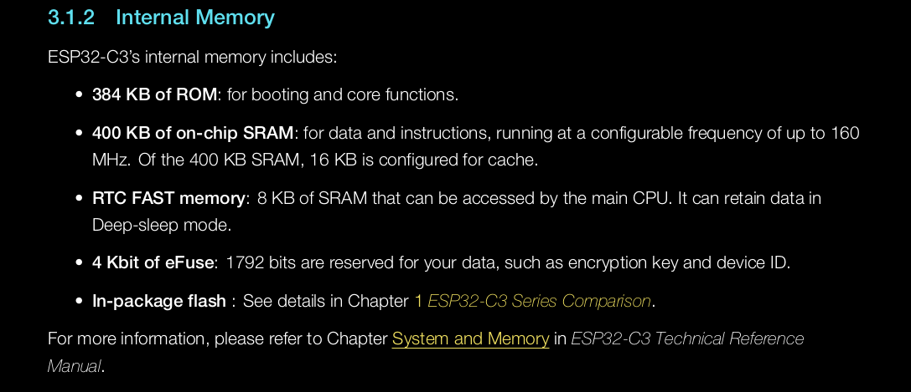
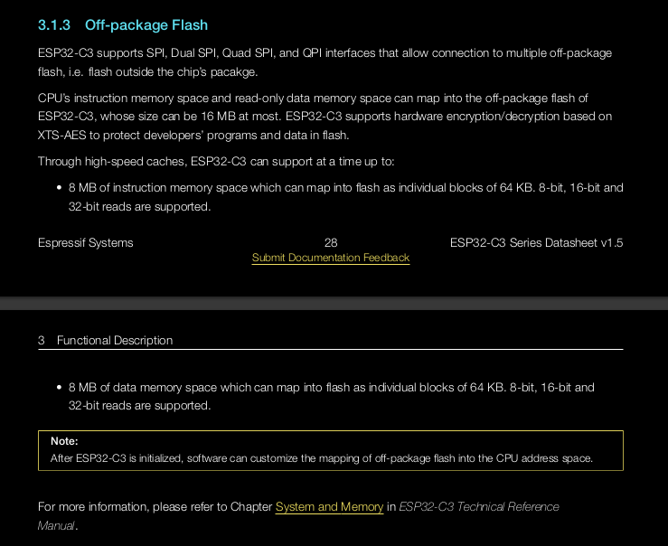
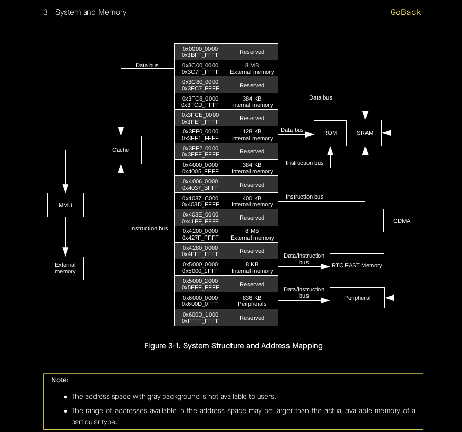
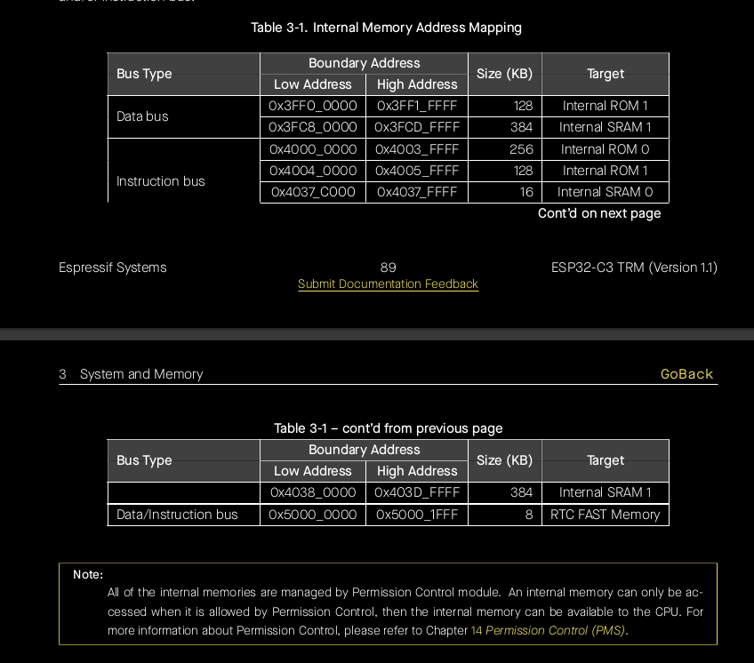

Intro
This book is on driver development using Rust. You get to procedurally write a UART driver for a RISCV chip called ESP32C3.
The chip costs less than 8 dollars, kindly... politely...with utmost humility... burn that cash. BURN THAT CAAAASHHH!!! Money machine go BRRRR!!!
Why the UART?
The UART driver was chosen because it is simple and hard at the same time. Both a beginner and an experienced folk can learn a lot while writing it.
For example, the beginner can write a minimal UART and concentrate on understanding the basics of driver development; No-std development,linking, flashing, logging, abstracting things in a standard way, interrupt and error-handling...
The pseudo_expert on the other hand can write a fully functional concurrent driver while focusing on things like performance optimization,concurrency and parallelism.
A dev can iteratively work on this one project for a long time while improving on it and still manage to find it challenging on each iteration. You keep on improving.
Moreover, the UART is needed in almost all embedded devices that require some form of I/O; making it a necessary topic for driver developers.
The main aim here is to teach, not to create the supreme UART driver ever seen in the multiverse.
What this book is NOT
This book does not explain driver development for a particular Operating System or Kernel. Be it Tock, RTOSes, Windows or linux. This book assumes that you are building a generic driver.
Quick links
To access the tutorial book, visit : this link
To access the source-code, visit this repo's sub-folder
Prerequisites for the Book
The prerequisites are not strict, you can always learn as you go:
- Computer architecture knowledge : you should have basic knowledge on things like RAM, ROM, CPU cycle, buses...
- Rust knowledge : You don't have to be a generics or atomics guru. If you are okay with the topics covered before chapter 14 in the Rust book, then you are overqualified for this.
- Have an esp32-c3.
- Some interest in driver development.
Intro to Drivers
This chapter is filled with definitions.
And as you all know, there are NO right definitions in the software world. People still debate what 'kernel' means. People are okay using the word 'serverless' apps. It's chaos everywhere.
So the definitions used here are constrained in the context of this book.
What's a driver?
A driver is a piece of software that sits in between a high-level program and a physical device. The high level program could be a kernel in this case.
The driver has 2 primary functions :
- Controlling the underlying device.
- Providing an interface for the kernel/higher-level program. The interface could contain things like functions, data_structures, message passing endpoints...
Demo :

Let's break down the two main roles of the driver...
Role 1 : Controlling the Physical device below
TLDR :
The driver controls the hardware below by either Direct Register Programming or Memory Mapped Programming. This can be done in Assembly, low-level languages like C/Rust, or a mixture of both.
A physical device is a piece of electronic that does things, for example, an SSD disk stores data. You can read and write to that SSD device.
An SSD is roughly made up of :
- Storage cells
- A small IC or processor that implements the SSD's firmware
- The SSD's firmware stored in the SSD's ROM
- Exposed registers
The only way to interact with the device is through the exposed registers.
To make the device do things, you meaningfully supply electrical signals to the exposed registers. Once the CPU detects signals on the registers, it interprets them as parameters for the functions defined in the firmware. From there, the firmware does its duties.
Here is an extremely over-simplified and incorrect view of the SSD :

Usage :
- To store data to the SSD...
- You write an 8-bit address to the address register. This is called the 'destination address': it is the memory address of the place you want to write to in the SSD.
- You write the 8-bit data that you wanted to store in the data register. This is called the 'subject data'
- You make sure that the read register is not receiving any signal. This gets translated as 'read == false'.
- You supply an electric signal to the write register. This electrical signal is translated as 'write == true'.
- The SSD processor detects a signal in the 'write' register and immediately does the following :
- It starts executing the "write function" found in the firmware code.
- It passes the 'destination' address and the 'subject data' to it
- Viollah! The write operation is complete.
A manual driver?
If we had the ssd and a couple of electric wires only, we could store data without using a driver. All we have to do is to supply meaningful electric signals to the registers of the ssd.
For example, to store the number 1 into the address 0x05, we could do this...

Programming
We are developers, we automate everything... especially when it is unnecessary. Our superpower.
So how do we automate this manual manipulation of SSD registers? How?? Panic everywhere!!
Solution 1: Direct Register Programming
We attach all the SSD registers DIRECTLY to the CPU. And then write some assembly code to change the values of the attached registers...
This solution gets the job done.
Demo:

Solution 2: Memory Mapped Programming
The CPU has a limited number of registers. The RAM exists because of this exact reason.
So instead of directly attaching the SSD registers to the limited CPU registers, we could attach them to the RAM instead.
We could then write some assembly code to manipulate RAM addresses, hence indirectly manipulating the values of the SSD registers. This is called Memory-mapped I/O programming (mmio programming).
This is the method that we will stick to because it is more practical.
You could however use Direct Register Programming when building things like pace-makers, nanobots or some divine machine that is highly specialized and requires 100% performance.
Here is a demo of a naive MMIO setup :

Summary
The driver controls the hardware below by either Direct Register Programming or Memory Mapped Programming. This can be done in Assembly, low-level languages like C/Rust, or a mixture of both.
Role 2: Providing an Interface
TLDR
- Just provide a well-thought out API.
- Err on the side of making communication between the kernel and the driver to be through message-passing.
- Err on the side of exporting structures that implement singletons.
[undone : Figure out how to write a clean driver-API, one that can be easily be reused in new drivers]
Types of Drivers
Classifications and fancy words do not matter, we go straight to the list :
Drivers classified by the level of 'how close to the metal?'
-
Function drivers : this drivers implement functions that directly manipulate registers. You could say that this are the OG drivers.
-
Filter drivers/ Processing drivers/ Wrapper drivers: This drivers take input from the function drivers and process them into palatable input and functions for the kernel. They can be seen as 'adapters' between the function-driver and the kernel. They can even be used to implement additional security features. Point being, their main function is wrapping the function-driver.
Oh look... this 👇🏻 is what we were talking about... thanks windows for your docs.

This image was borrowed from the Windows Driver development docs
Note : A driver stack is a collection of different drivers that work together to achieve a common goal. For example, you may use many function and filter drivers to control an integrated piece of hardware.
Another example : You may use a couple of filter drivers when porting a function driver to a new kernel environment.
Drivers classified by function
- storage drivers : eg ssd drivers
- File System Drivers : Drivers above the file system.
- system drivers : used in motherboard components instead of peripherals
- Input Device Drivers
- Network Drivers
- Communication drivers
- Virtual drivers (Emulators)
- This list can be as long as one can imagine... but I hope you get the drift
Bare Metal Programming
Bare Metal Programming !!!!!!!!!!
Welcome to the first cool chapter!!! Wooooohooooo!!! Time to be one with the cold metal.
I would really love to write more about this topic.
It is THE FOUNDATION OF EVERYTHING in this book.
I need to take time to put it in better words.
However, Philipp Oppermann's blog covered this chapter very well. You can read it here 👇🏽:
- Chapter 1 : A Freestanding Rust Binary
- Chapter 2 : A Minimal Rust Kernel
It would be an understatement to call those 2 chapters legendary.
Bare Metal Programming
Drivers provide an interface for the OS to use, meaning that the OS depend on drivers... as a result, you have to write the driver code without the help of the OS-dependent Standard Library.
Drivers do not depend on the standard library, they run on bare metal. Bare metal programming is the art of writing code that assumes zero or almost-zero hosted-environment.
We will procedurally create a bare metal program in the next few sub-chapters.
The Standard Library
The standard library is a group of common function declarations that get called by applications that run on top of an OS.
So each OS needs to provide implementations for all those common functions.
For example, the standard library declares the thread_spawn function. Linux OS provides an implementation of that function that is different from the Windows implementation... provided they all do the same thing.
So when you write drivers, you cannot use the standard library. You can however use the core-library.
Losing the std library means you forget about threads, files, heap memory, the network, random numbers, standard output, or any other features requiring OS abstractions or specific hardware. If you need them, you have to implement them yourself.
Pracs
It is best to do things practically... you get error messages that engrain into you PTSD.
Step 1: Disabling the Std library
By default, rust programs depend on the standard library. To disable this dependence, you add the 'no_std attribute' to your code. The code however switches to depending on the 'core' crate.
#![no_std] fn main(){ println!("Hello world!!"); }
If you run this code, you get 3 compilation errors.
- error: cannot find macro
printlnin this scope - error:
#[panic_handler]function required, but not found - error: unwinding panics are not supported without std
Println macro is part of the standard library. That is why it cannot be found in the scope of the 'no_std' crate.
If we remove the println line, we still get the remaining two errors.
Fixing the second and third errors.
This is going to be a short fix but with a lot of theory behind it.
To solve it, we have to understand the core library requirements.
The core library functions and definitions can get compiled for any target, provided that the target provides definitions of certain linker symbols. The symbols needed are :
- memcpy, memmove, memset, memcmp, bcmp, strlen [undone: more info needed on these memory routines and their integration]. If your target is supported by rustc, you need not worry about these memory routine symbols.
- rust_begin_panic
- rust_eh_personality
For now,
[undone]
-
crt0 functions
-
crt0 implemetations
-
elf board support? How is it implemented?
-
triple-targets
-
what does target add command actually do and why
-
Target support
-
Adding custom targets
-
THe boot process
-
THe esp32 boot process
-
Loaders : BIOS, UEFI, U-Boot SPL, CoreBoot
-
Runtimes : UEFI, ATF(ARM TRUSTED FIRMWARE)
-
BootLoaders : Uboot, Grub, Linux Boot
-
firmware standards in the RISCV ISA
-
Open SBI
-
System V ABI
Bios :
- firmware that sets up environment fit to run a kernel on. It does the following
- does a power-on-self-test
- loads the boot loader to memory. The bootloader then loads the Kernel
- Source Material : https://riscv.org/wp-content/uploads/2019/12/Summit_bootflow.pdf
- Multiboot standard
Linker scripts
You can read about linker scripts here :
examples :
- GNU Binutils Linker (ld)
- The LLVM Linker (lld) - preferred because it is a predecessor of ld. Similar to ld in terms of commands and scripting landuage. faster. Modular. Documented.
But I'll stick with ld then move on to lld later on.
To check the default linker for your target... check the target-spec-json :
rustc -Z unstable-options --target riscv32i-unknown-none-elf --print target-spec-json
It is not guaranteed that the default linker will always be used, so check the cargo.toml file for assurance
Why do we need a linker-script
A linker script helps organize the memory layout of the object file(s).
Why do we need to write linker script each time, can't we have a default?
The linker always uses a linker script. If you do not supply one yourself, the linker will use a default script that is compiled into the linker executable.
There is a default script that comes with the linker. You can see it using the 'ld --verbose' command.
But this link-script is suited for the pc-host.
So if we are compiling an object file for a different host, we need to define a linker script for the new target.
You may supply your own linker script by using the ` -T ' command line option. for example :
ld -T
You can also add link linker-scripts as input files, but they wont erplace the default linker-script.
Common Inspections
Tools : objdump, nm
-
ld -h file // view all the sections, and their neat matadata
-
ld -t file // view the symbol table
-
nm - list symbols from object files
-
Run 'man nm'
-
nm -C ./target/debug/riscv_metal // view the symbol table while things are demangled
pracs
we are going to write the linker script for an esp32c3.
So get your datasheet out and plug in that board to your pc.
Random questions you need to think through
- How does a debugger flash memory? can you explain it step by step
- Why is it called a ROM if a debugger can write to it?
- Is the ESP32 ROM empty?
- If it is empty, what does the cpu fetch?
- If it not empty, what is there? really...
- What is the difference between loadable address and reocatable address?
- Suppose the debugger manages to flash to the device, does it flash to both the RAM and ROM
- If the loadable address for a section is not specified, it is assumed to be the same as the relocatable address. The loadable address == ROM address, the relocatable_address == RAM. what if the ROM address space is smaller than the RAM address space? What happens? Does the debugger throw an error? Or does it just flash the RAM only?
- wtf is an ABI?
- what is the interface between the CPU and the software?
- what correlation is there between the isa and abi?
- Who reads the elf? the cpu? the os/ a program loader engrained in the firmware? which firmware ... arent we the ones writing that firmware?
- What is the crt0? where do we inject it in our code? what does it do? And dont say 'prepare the environment'
- describe the entire journey frm writing hello world to flashing to running to turning off to restarting the board
- read the elf abi
- Why do we need to produce an elf file? Is an elf file just a way of grouping sections in a standard way?
- What is the difference between a memory segment and memory region?
- If a debugger is powerful enough to flash a machine, how do people protect their machines from tampering?
- What is the use of the overlay command in a linker script? How does it get implemented on the physical machine? What implements it? When is it a good idea to use the overlay command?
- What is the relation between program headers, sections and memory regions?
- Does the riscv cpu care that you've used an elf? or a specific riscv ABI version?
- When is the PROVIDE keyword necessary?
more
- apart from mapping sections, what other operations can the linker do?
Step one : understanding the memory layout of the board
We need to know the memory layout of the board.
- Where is the address of the RAM?
- Where's the ROM address?.
- Which sections do we need to load into?
- Which sections do we need to AVOID overwriting?
- Which sections are unusable?
- Are there sections that have hardwired access-permissions?
We want to know how and where we will load the object file.
So we read the 'System Memory chapter' from both the datasheet AND Technical_reference. Don't fret, all of this is like 20 pages, and most of the pages just have images.
Below are some useful excerpts from the datasheet.
Memory Descriptions :
 
More elaborate memory descriptions are found in the technical reference (2 pages long)
Memory Mappings :


Visual Representation of memory mapping :

You may notice that some info looks contradicting. For example, the docs said that the chip has 384kiB of ROM yet in the images we have ROM-0 and ROM-1. ROM-0 is 384kiB and ROM-1 is 64kiB, that totals to 448kiB!! We expected 384KiB but we got 448KiB. This 'contradiction' has been explained below.
Buses and the addres space
The address space is the list of addresses that the CPU can process/access. If you want to access addresses beyond the address space, you have to modify the CPU itself. Since the CPU bus is 32bits long, it can access a 4GiB memory address space in a one-to-one access ie without the help of MMUs to help it access more than 4GiB.
The CPU has 2 kinds of buses, data buses and instruction buses. This was a design choice, I guess for the sake of performance. Separating concerns breeds specialization.
Both data bus and instruction bus are little-endian.
The data bus can access memory using single-byte, double-byte, 4-byte alignment. The instruction bus can only access memory using a 4-byte alignment. That means that you can fetch a 64-bit word even if what you really intended to fetch was a byte. Choose your trade-offs well.
There are sections of memory where only the instruction bus can access. They are shown in the table below.

Now, going back to our earlier contradiction. It is not really a contradiction, the ROM is 384 kiB But it is divided into 2 parts that overlap. ROM-0 is 384kiB and can be accessed by the instruction bus ONLY. ROM-1 is a subset of ROM-0. ROM-1 is 64kiB out of the entire 384kiB. ROM-1 can be accessed by both the Data bus and instruction bus.
Now, if I say that the ROM-1 and ROM-0 overlap, why do they have different and distinct addresses?
As earlier said, some sections can be accessed by both the data and instruction bus. So even if the addresses used are different, they are referring to the same physical point. The different addresses help the CPU know which bus you have chosen to use.
Step one (continuation)
Now we need to use the info gathered from the datasheet to decide on the layout of the object file.
Observations and decisions
- All the grey-shaded areas shown in the Address mapping structure are unusable. This was seen in the address mapping structure. So our linker script should not load any section to those memory regions.
- The 400KiB SRAM is enough, let us leave the ROM for more permanent core functions that we will write in the future. For now, the SRAM is enough. We will touch on the RTC Memory when we need to preserve data while the CPU is in sleep mode... we don't need such complexity at the moment.
- We will store .data and .bss section the SRAM1 section because that section can be accessed using the data-bus.
- We will store .text section in the SRAM2 memory region because that section can be accessed by the instruction-bus
Runtime requirements
example linker files
These are sample linker files from the esp-hal repo for the esp32c3 board.
- linkall.x
- memory.x
- esp32.x
- hal-defaults.x
- rom-functions.x
Linkall File
linkall.x is the root linker file; other linker files are included in it.
INCLUDE "memory.x"
/* memory abstraction setion */
REGION_ALIAS("ROTEXT", IROM);
REGION_ALIAS("RODATA", DROM);
REGION_ALIAS("RWDATA", DRAM);
REGION_ALIAS("RWTEXT", IRAM);
REGION_ALIAS("RTC_FAST_RWTEXT", RTC_FAST);
REGION_ALIAS("RTC_FAST_RWDATA", RTC_FAST);
INCLUDE "esp32c3.x"
INCLUDE "hal-defaults.x"
INCLUDE "rom-functions.x"
The memory abstraction section wraps the machine-specific memory-region names into generic-memory-region names.
For example :
REGION_ALIAS("RTC_FAST_RWTEXT", RTC_FAST);
Memory.x file
Memory.x is a machine-specific file that outlines the memory regions of the specific board.
MEMORY
{
/*
https://github.com/espressif/esptool/blob/ed64d20b051d05f3f522bacc6a786098b562d4b8/esptool/targets/esp32c3.py#L78-L90
MEMORY_MAP = [[0x00000000, 0x00010000, "PADDING"],
[0x3C000000, 0x3C800000, "DROM"],
[0x3FC80000, 0x3FCE0000, "DRAM"],
[0x3FC88000, 0x3FD00000, "BYTE_ACCESSIBLE"],
[0x3FF00000, 0x3FF20000, "DROM_MASK"],
[0x40000000, 0x40060000, "IROM_MASK"],
[0x42000000, 0x42800000, "IROM"],
[0x4037C000, 0x403E0000, "IRAM"],
[0x50000000, 0x50002000, "RTC_IRAM"],
[0x50000000, 0x50002000, "RTC_DRAM"],
[0x600FE000, 0x60100000, "MEM_INTERNAL2"]]
*/
/* 400K of on soc RAM, 16K reserved for cache */
ICACHE : ORIGIN = 0x4037C000, LENGTH = 0x4000
/* Instruction RAM */
IRAM : ORIGIN = 0x4037C000 + 0x4000, LENGTH = 400K - 0x4000
/* Data RAM */
DRAM : ORIGIN = 0x3FC80000, LENGTH = 0x50000
/* External flash */
/* Instruction ROM */
IROM : ORIGIN = 0x42000000 + 0x20, LENGTH = 0x400000 - 0x20
/* Data ROM */
DROM : ORIGIN = 0x3C000000, LENGTH = 0x400000
/* RTC fast memory (executable). Persists over deep sleep. */
RTC_FAST : ORIGIN = 0x50000000, LENGTH = 0x2000 /*- ESP_BOOTLOADER_RESERVE_RTC*/
}
esp32c3.x File
Debugging
-
explain the jtag protocol technique
-
explain OpenOcd
-
gdb server
-
demo it via probe-rs
-
show logging via defmt, RTT
Udev
Reference tutorial : https://opensource.com/article/18/11/udev
Udev stands for User-Device manager.
It is one of linux's subsystems. You can find the other subsystems in the folder '/sys'.
[undone: write a tutorial on udev]
to remember :
- monitoring with 'udevadm monitor'. Looking out for verbs/actions associated with device. What is the order of events when device_event happens?
- listing the available devices : lsusb, lsblk, lshw,
- Reading output from lsusb.
- Reading output from lsblk.
- Getting all associated attributes associated to a specific device and its parents, so as to get the right attributes to reference when writing rules
- Writing rules.
- Reloading rules
- Logging
probe-rs
Probe-rs is an open-source debugging and flashing tool for microcontrollers.
It provides a unified interface to interact with various hardware debug probes, enabling developers to debug and flash firmware on embedded systems.
Probe-rs can be used both as a crate or a CLI app.
It supports a wide range of microcontroller architectures and debug probe hardware, making it a versatile tool for embedded development
Architecture
Probe-rs is built with a modular architecture, consisting of several key components:
- Probe Interface: This component interacts with the physical hardware debug probe, such as J-Link, ST-Link, or CMSIS-DAP.
- Debugging Backend: Handles the low-level communication with the target microcontroller's debug interface (e.g., JTAG, SWD).
- API Layer: Provides a high-level API for interacting with the debug probe and the target microcontroller. This API is used by higher-level tools and applications.
- Utilities and Extensions: Probe-rs offers various utilities and extensions for specific use cases, such as firmware flashing, debugging, and memory inspection
probe-rs CLI commands and their importance
Why is my program not flashing?
Does your program use a correct linker script? Does the script specify a memory layout that conflicts with the Esp32c3 memory layout? File too big for certain memory sections? Have you assigned sections to memory regions that were flagged as unreachable?
To test that out use the linker sript and src_code found in the fixup folder.
Did you specify the right debug protocol? JTAG vs SWD?
cargo-flash
This is a tool that tries to make the flashing process easier by integrating probe-rs with cargo.
It already has many supported chips. And if you have a custom chip, you can tweak it to suit your needs.
The cargo flash in crates.io is outdated (indicates version 0.13), cargo-flash supports more than just ARM chips.
Just to get the better version, install cargo-flash by installing probe-rs as a whole.
Understanding cargo-flash commands
To view the possible commands, run the following comand in the terminal.
cargo flash --help
You get something like this, some lines have been hidden... but you can unhide them by toggling the 'eye' button below :
Common options when flashing a target device
Usage: cargo flash [OPTIONS]
Options:
--reset-halt
Use this flag to reset and halt (instead of just a reset) the attached core after flashing the target
--log <level>
Use this flag to set the log level
--path <path>
The path to the file to be flashed
--work-dir <directory>
The work directory from which cargo-flash should operate from
--chip <CHIP>
[env: PROBE_RS_CHIP=]
--chip-description-path <chip description file path>
--connect-under-reset
Use this flag to assert the nreset & ntrst pins during attaching the probe to the chip
--dry-run
--allow-erase-all
Use this flag to allow all memory, including security keys and 3rd party firmware, to be erased even when it has read-only protection
--disable-progressbars
--disable-double-buffering
Use this flag to disable double-buffering when downloading flash data. If download fails during programming with timeout errors, try this option
--restore-unwritten
Enable this flag to restore all bytes erased in the sector erase but not overwritten by any page
--flash-layout <filename>
Requests the flash builder to output the layout into the given file in SVG format
--verify
After flashing, read back all the flashed data to verify it has been written correctly
--format <FORMAT>
If a format is provided, use it. If a target has a preferred format, we use that. Finally, if neither of the above cases are true, we default to ELF
--base-address <BASE_ADDRESS>
The address in memory where the binary will be put at. This is only considered when `bin` is selected as the format
--skip <SKIP>
The number of bytes to skip at the start of the binary file. This is only considered when `bin` is selected as the format [default: 0]
--idf-bootloader <IDF_BOOTLOADER>
The idf bootloader path
--idf-partition-table <IDF_PARTITION_TABLE>
The idf partition table path
-h, --help
Print help (see more with '--help')
-V, --version
Print version
PROBE CONFIGURATION:
--protocol <PROTOCOL> Protocol used to connect to chip. Possible options: [swd, jtag]
--probe <PROBE_SELECTOR> Use this flag to select a specific probe in the list
--speed <SPEED> The protocol speed in kHz
# CARGO BUILD OPTIONS:
# The following options are forwarded to 'cargo build':
# --bin
# --example
# -p, --package
# --release
# --target
# --manifest-path
# --no-default-features
# --all-features
# --features
# Additionally, all options passed after a sentinel '--'
# are also forwarded.
# For example, if you run the command 'cargo flash --release -- \
# --some-cargo-flag', this means that 'cargo build \
# --release --some-cargo-flag' will be called.
Meaning and Usage of the commands
--reset-halt
Use this flag to reset and halt (instead of just a reset) the attached core after flashing the target
Resetting in the context of embedded systems typically refers to the act of restarting or reinitializing the microcontroller or microprocessor to a known state. This process can involve several steps, including clearing memory, resetting peripheral devices, and initializing hardware registers to their default values.
Halting the core means stopping its execution, which can be useful for debugging or ensuring a clean state before starting execution.
--log <level>:
# for example :
# cargo flash --log error
# cargo flash --log debug
Sets the log level for the operation. Logging levels control the verbosity of the output messages, allowing users to specify how much detail they want to see during the flashing process.
Certainly! Let's consider an example of how the --log option can be used in a cargo-flash command:
Suppose you're flashing firmware onto a microcontroller using cargo-flash, and you want to control the amount of detail shown in the output messages during the flashing process. You can use the --log option to specify the desired logging level.
For instance, if you want to see only critical errors and warnings during the flashing process, you can set the log level to "error" or "warn". Here's how you would do it:
cargo flash --log error
With this command, cargo-flash will only display error messages, such as critical failures or warnings indicating potential issues that need attention. This minimal logging level can be useful when you're primarily interested in identifying and addressing critical problems during flashing.
On the other hand, if you want more detailed information during the flashing process, you can set the log level to "info" or "debug". Here's how you would do it:
cargo flash --log debug
With this command, cargo-flash will provide additional information, such as progress updates, debugging messages, and other details relevant to the flashing operation. This higher logging level can be helpful when you're troubleshooting issues or monitoring the flashing process closely.
--path <path>:
# for example : cargo flash --path ./target/debug/executable_file
Specifies the path to the file to be flashed. This is the binary file containing the firmware that will be programmed onto the target device.
If you don't specify this, cargo will automatically assume that its the target binary of that particular cargo project.
--chip <CHIP>:
# for example : cargo flash --chip esp32c3
Specifies the target chip/device. This option is crucial for cargo-flash to know the specific hardware it is flashing firmware onto. This command only works with supported chips. If your chip is not supported by default, you can add it by providing the chip description(SVD) and tweaking some configs [undone: more explanation is needed here]
--chip-description-path <chip description file path>:
Specifies the path to the file containing the description of the target chip. This file provides information about the memory layout, peripherals, and other details necessary for flashing. This file is helpful when you are adding a new chip to be supported by cargo flash and probe-rs.
--connect-under-reset:
# For example : cargo-flash --chip esp32c3 --connect-under-reset
Sets the states of the nreset & ntrst pins during attaching the probe to the chip. This option can ensure a more reliable connection between the programming tool and the target device.
Setting the nreset pin resets the state of the whole micro-controller.
setting the ntrst pin resets the chip debug/programming interface only.
--dry-run`:
Performs a trial run without actually flashing the firmware; it simulates the flashing process without actually writing any data to the target device. Instead of performing the real flashing operation, it only goes through the motions of the process.
This is useful for testing the command and verifying the parameters without making any changes to the target device. It's important for ensuring that the flashing process is configured correctly before performing the actual operation.
Logging
defmt
Read the official docs
MMIO programming
- explain why mmio programming is important
- how is it implemented? (GDMA and all)
- demonstrate the relevance of understanding the memory layout
Registers and MMIO programming
You know your hardware by reading the relevant parts of your datasheet.
Your hardware is like a library, the datasheet is its documentation.
MMIO Programming
But before we talk about the datasheets, let't talk about MMIO-programming.
[demo, undone]
MMIO involves using memory addresses as an interface to communicate with and control hardware devices.
Memory-Mapped I/O refers to the technique of accessing hardware registers and controlling peripherals using memory addresses. Instead of specialized instructions, developers interact with hardware by reading from and writing to specific memory addresses, treating hardware like memory-mapped regions.
Hardware Registers: Peripherals and hardware components are often controlled by registers, each associated with a specific functionality (e.g., configuration, data transmission, status).
So to control hardware, you read and write to the respective registers... or memory regions.
The Volatile key word
Quick detour :
Facts :
- Your code does not always get executed procedurally.
- Some lines from your code get ignored or cut out by the compiler or CPU.
The compiler optimizes the order of instructions, it even makes assumptions : eg
#![allow(unused)] fn main() { let register_1 = 1; // insert other instructions here let register_1 = 1; }
can be optimized to
#![allow(unused)] fn main() { let register_1 = 1; // insert other instructions here // let register_1 = 1; // gets truncated }
The CPU also optimizes and changes the order of those instruction even further.
If you add parallelism to the matter... it just makes it impossible to be sure that your instructions get executed in a specific order.
These optimizations are bad if the changes to the register truly matter.
Enter the volatile key-word... the superhero
The volatile keyword makes reads and writes to be atomic and un-reordered(if that'ts a word).
It is the embodiement of :
"Hey, compiler and CPU, no optimizations should affect the order of my reads and writes. I cannot deal with surprises please"
useul when the order and timing of reads and writes are critical, and the compiler should not make any assumptions about the potential side effects of these operations.
example in rust :
// Import necessary modules use core::ptr; fn main() { // Define a mutable pointer to a memory-mapped address let mut mmio_ptr = 0x4000_0000 as *mut u32; unsafe { // Read from a volatile memory-mapped address let value = ptr::read_volatile(mmio_ptr); println!("Read value: {}", value); // Write to a volatile memory-mapped address let new_value = value + 1; ptr::write_volatile(mmio_ptr, new_value); println!("Written new value: {}", new_value); } }
Summary :
- You control hardware by reading and writing to its registers.
- All reads and writes to the registers have to be done using the volatile keyword.
Question : Why do you think Volatile reads and writes are not the default methods. why are unpredictable reads and writes the default methods?
Knowing your Hardware
Your hardware is like a library, to use it correctly, you should know it well... or at least know the relevant parts.
To understand your hardware, you read the datasheet. Like this one : the esp32 datasheet
The 20% of the 100%, the important parts :
- Understand the functional features and capabilities
- Understand the hardware registers AND pins of the hardware you want to control.
What's the diference between pin and a register in mmio? [Demo, undone]
Figures
-
Physical board with Pins

-
Pin Layout


-
Memory Layout (Registers + Actual_memory)


Abstraction
- explain the abstraction crates in rust, PACs, MACs, HALs, board crates
- Try to implement a naiv abstraction.
- Finally use a tool svd2rust
svd2rust
Once you read the datasheet, and understand the memory mapping, pin-layout and whatever else you wanted to get straight, you begin to safely abstract the board.
SVD files
An svd file is a file that describes the peripherals of a board using xml. So you could say that an svd file is a board abstracted as an xml template.
SVD is the abbreviation for : System View Description.
The svd file outlines :
- The boards metadata eg boardname, board version, feature description, vendor name
- Major component info : eg CPU_capabilities, Endianness, address_width, added cpu_extensions...
- all list of all the peripherals
- the registers of each peripheral
- the functions of each register
- the memory address of each register
- the read/write access of each register
You can find sample svd files here, they are from the espressif organization.
Here is the esp32C3 svd file that we will be using : ESP32_C3 svd file
Here is a snippet of a sample svd file :
<?xml version="1.0" encoding="UTF-8"?>
<device schemaVersion="1.1" xmlns:xs="http://www.w3.org/2001/XMLSchema-instance" xs:noNamespaceSchemaLocation="CMSIS-SVD_Schema_1_1.xsd">
<vendor>ESPRESSIF SYSTEMS (SHANGHAI) CO., LTD.</vendor>
<vendorID>ESPRESSIF</vendorID>
<name>ESP32-C3</name>
<series>ESP32 C-Series</series>
<version>17</version>
<description>32-bit RISC-V MCU & 2.4 GHz Wi-Fi & Bluetooth 5 (LE)</description>
<!-- snip snip snipped some lines -->
<cpu>
<name>RV32IMC</name>
<revision>r0p0</revision>
<endian>little</endian>
<mpuPresent>false</mpuPresent>
<fpuPresent>false</fpuPresent>
<nvicPrioBits>0</nvicPrioBits>
<vendorSystickConfig>false</vendorSystickConfig>
</cpu>
<!-- snip snip snipped some lines -->
<peripherals>
<!-- here is 1/32 peripherals -->
<peripheral>
<name>UART0</name>
<description>UART (Universal Asynchronous Receiver-Transmitter) Controller 0</description>
<groupName>UART</groupName>
<baseAddress>0x60000000</baseAddress>
<addressBlock>
<offset>0x0</offset>
<size>0x84</size>
<usage>registers</usage>
</addressBlock>
<interrupt>
<name>UART0</name>
<value>21</value>
</interrupt>
<registers>
<register>
<name>FIFO</name>
<description>FIFO data register</description>
<addressOffset>0x0</addressOffset>
<size>0x20</size>
<fields>
<field>
<name>RXFIFO_RD_BYTE</name>
<description>UART 0 accesses FIFO via this register.</description>
<bitOffset>0</bitOffset>
<bitWidth>8</bitWidth>
<access>read-write</access>
</field>
</fields>
</register>
<!-- more registers -->
<register>
</register>
</register>
<!-- more registers -->
<peripheral>
<!-- snipped out the other 31 peripherals -->
<peripherals>
svd2Rust
This is a tool that takes in svd files and outputs Rust code that reflects the contents of the svd file.
Why use svd2rust instead of doing the abstraction manually?
Before we discuss whether you should do it manually or not. Let's settle out some facts first.
A full-fledged board has many components. The datasheet reference is like >700 pages. These components are dependent on each other.
You get some form of info overload. How can you create complete abstractions if you do not fully understand the board and how they are interdependent on each other? Enter headaches and suicidal thoughts.
If you look at the esp32c3.svd file, you realize it is >35000 lines. But at-least the svd file provides a complete abstraction from the >700 page datasheet.
When to do it manually
- When you fully understand all the details about a peripheral
- When you also fuly understand all the direct components that the target peripheral depends on.
- When you can comfortably abstract the peripheral and its dependents, in a safe way: critical sections, atomics and all that vodoo when accessing registers.
- When you do not need to abstract the whole board.
When to do it automatically
- When you dont mind abstracting all the peripherals
- When you want a library to automatically implement the access-safety methods of accessing registers. You don't have to implement atomic vodoo on your own.
- When you want to use a standard way of abstracting the board. Your whole team uses the same template. Everyone speaks the same language, everyone becomes happy.
svd2rust
To understand svd2rust, let's :
- read its docs
- experiment with it a little
- Do our abstractions manually without depending on svd2rust
- Go back to svd2rust while fully appreciating all the manual work it does for us
Notable Crates
For bare metal programming
- heapless
- critical-section
- portable-atomic
- bit-field, bitfield
- bit-flags
- embedded-hal
- embedded-dma : This library provides the ReadBuffer and WriteBuffer unsafe traits to be used as bounds to buffers types used in DMA operations.
- fugi : time crate for embedded systems
- nb : Minimal and reusable non-blocking I/O layer
- riscv
- riscv-rt
- volatile-register
- vcell : Just like Cell but with volatile read / write operations
Utility-like
- svd2rust + form + rustfmt
- defmt : A highly efficient logging framework that targets resource-constrained devices, like microcontrollers. Check out the defmt book at https://defmt.ferrous-systems.com for more information about how to use it.
- embassy crates
- probe crates
- clap
- ratatui
- serde
more tertiary for now
- cfg-if : A macro for defining #[cfg] if-else statements.
Why Embedded Rust
Memory Safety:
Rust's ownership system and borrow checker ensure memory safety without the need for a garbage collector. This helps prevent common issues like null pointer dereferences, buffer overflows, and data races.
Concurrency and Parallelism:
Advantage: Rust provides ownership-based concurrency control, allowing developers to write concurrent code without the risk of data races. The language's emphasis on zero-cost abstractions enables efficient parallelism.
Nice integration with C and C++... and their respective tools
- Rust has a robust FFI that allows seamless integration with C and C++ code.
- Cargo integrates well with tools that are popular in the embedded world, so a C developer needs not learn ALL NEW things. For example the default toolchain components are extended LLVM or GNU components. You can integrate C library and build tools in a seamless manner in your project.
Ergonomics
- Tools are considerably documented.
- Helpful community
- many helpful tools & crates... especially the compiler itself.
Naive but somehow true perspective : Rust enables you to write complex software (even as a junior), your implementation is not 100% dependent on your experience level.
Newlib
Newlib is a lightweight and efficient C library primarily designed for embedded systems and other resource-constrained environments. It provides standard C library functionality, including input/output, string manipulation, memory management, and more, while prioritizing small size and minimal overhead. Although it aims to offer POSIX compatibility, Newlib may not implement the full range of POSIX functions found in larger libraries like glibc. Suitable for standalone usage or integration into embedded development toolchains, Newlib serves as a practical choice for projects where conserving resources is paramount and where comprehensive POSIX compliance is not a strict requirement.
glibc (GNU C Library):
glibc is the standard C library for the GNU operating system and most Linux distributions.
It provides comprehensive POSIX compatibility and a wide range of features, but it is relatively large and may not be suitable for embedded systems with limited resources.
musl libc:
musl is a lightweight, fast, and efficient C library that aims to provide POSIX compatibility with minimal overhead. It is designed to be small and suitable for embedded systems and other resource-constrained environments.